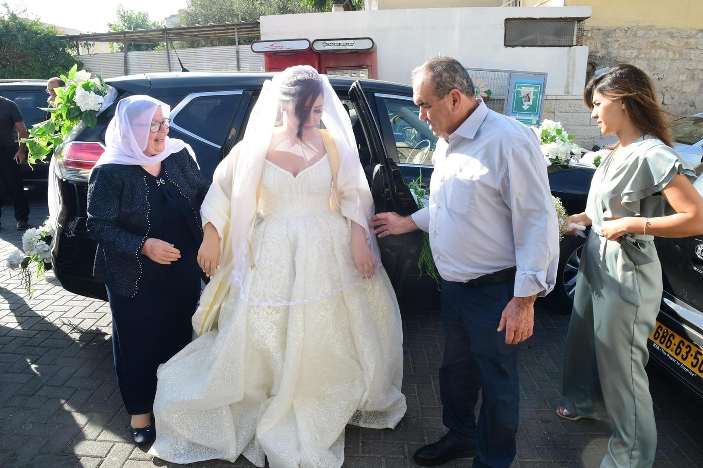
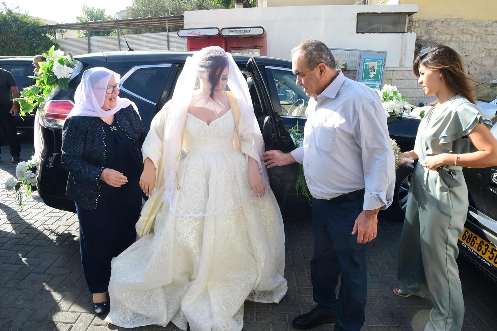

חתונה דרוזית
אני מלכת הדבקה!
מה ללבוש
האורחים מגיעים בלבוש פורמלי וצנוע.
לדוגמא...
- נשים - שמלות צנועות
- גברים - מכנסיים מחויטים וחולצה יפה
תחשבו שהתלבשתם ליום חשוב בעבודה

 

איזה מתנה להביא
המתנה המתאימה ביותר הינה כסף, הסכום תלוי במידת הקרבה לזוג הטרי
שימו לב שלא נהוג להביא צ'קים, לכן חשוב שתוודאו שיש לכם כסף מזומן.
הביאו את הכסף המזומן במעטפה יפה בצירוף ברכה חמודה
כדאי לדעת...
במהלך טקס החתונה, קרובי משפחה וחברים קרובים מעניקים שטרות לזוג הטרי.
את הכסף תולים בעזרת סיכה על סרט לבן הכרוך סביב צווארם של החתן והכלה.
בתמונה, הסרט של הכלה מלא בדולרים (לא תמצאו שם שטר קטן מ-100$)
מהלך האירוע
שלושה אירועים שביחד מרכיבים חתונה: (טפו טפו)
-
מסיבה של הכלה
- מתקיימת כ-יומיים לפני הטקס, בשעות הערב
- מוזמנות אליה חברות קרובות ומשפחה בלבד
- במסיבה אוכלים ורוקדים עד השעות המאוחרות בלילה
-
טקס
- מתקיים ביום החתונה בשעות הצהריים
- משפחת החתן מגיעה, לבית הכלה ומבקשת ממשפחתה ללוות אותה לביתה "החדש"
- כל המשפחה תלווה את הכלה בקריאות שמחה וקולולולולולולו
- היא מקבלת חתיכת בצק מקושט בפרחים ומניחה אותו חזק חזק ליד דלת הכניסה
-
מסיבה של החתן
- מתקיימת בשעות הערב לאחר טקס החתונה
- כולם מוזמנים! משפחת החתן והכלה, חברים והרבה מכרים
- גם כאן אוכלים ורוקדים
כדאי לדעת...
יש האומרים שככל שהבצק מחזיק מעמד יותר כך תהיה גם הזוגיות של הזוג הטרי, ולכן רצוי להטיח אותו בחוזקה.
וגם . . .
במקרים מסוימים מאחדים בין מסיבת הכלה והחתן, תלוי בהחלטת החוגגים
מוזיקה וריקודים
- משמיעים מוזיקה מזרחית ומסורתית בשפה הערבית
- הריקודים תואמים לשירים
- יש ריקוד אחד מיוחד, דבקה () דבקה הוא ריקוד מסורתי במזרח התיכון, נחשב למחול לאומי בלבנון, בסוריה ובקרב ערביי ארץ ישראל. , שמעתם עליו? תראו אותו מטה...
ממליצות לכם לשמוע קצת ודיע אלסאפי (وديع الصافي) לפני האירוע, שתרגישו קשורים!